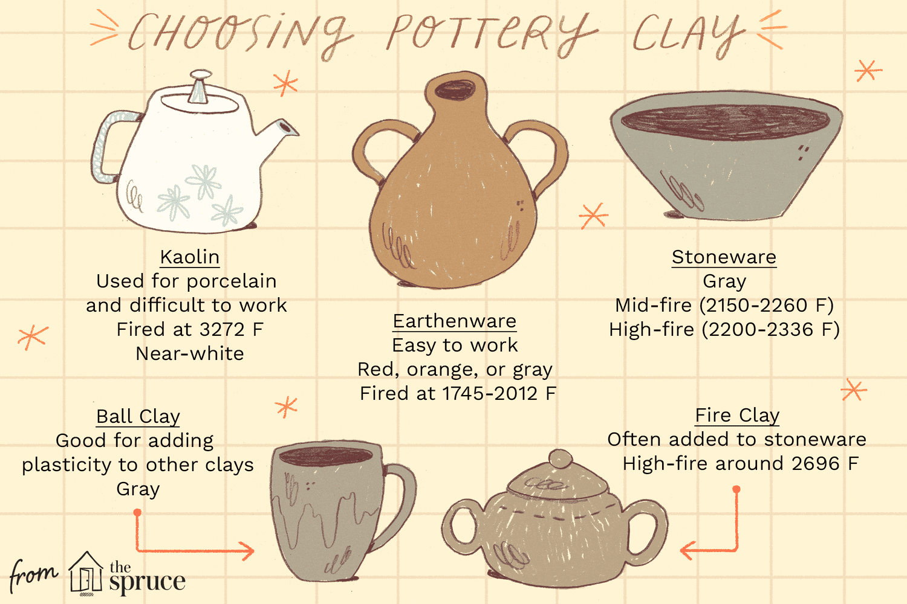

Pottery is the art and craft of making objects from clay, shaping them by hand or on a potter's wheel, and then hardening them by firing in a kiln at high temperatures.
🏺 Clay & Pottery[ ⚱️ Pottery ] A traditional clay vase or urn.
🌀 Wheel Spiral lines showing a spinning pottery wheel.
🌀Bowls, plates, and cups
🌀Vases and flower pots
🌀Decorative items and sculptures
🌀Storage containers
"The artist created beautiful pottery from clay and glazed it before firing."
✿ In simple terms: Pottery is the process of turning clay into useful or decorative objects by shaping and baking it until it becomes hard and durable. ✿
• 🪨 Clay
• 💧 Water
• 👐 Pottery Wheel (optional)
• 🔪 Clay Modeling Tools
• 🧽 Sponge
• 📏 Rolling Pin
• 🪵 Wooden Board/Bat
• 🎨 Glazes and Paint Brushes
• 🔥 Kiln (for firing the pottery)
• 🧹 Apron and Cleaning Cloth
• 🪣 Bucket for Water and Cleaning
♡These basic materials and tools help in shaping, decorating, and finishing pottery items.♡
